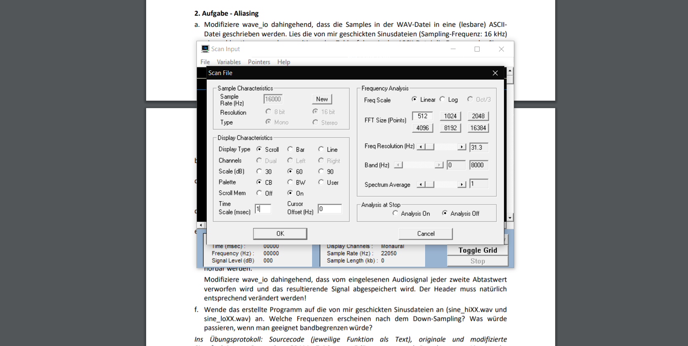
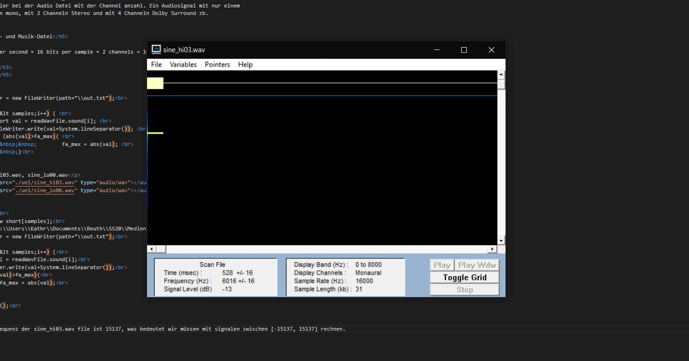
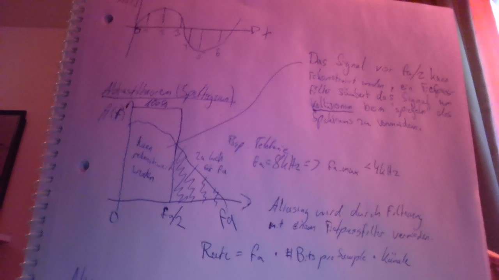
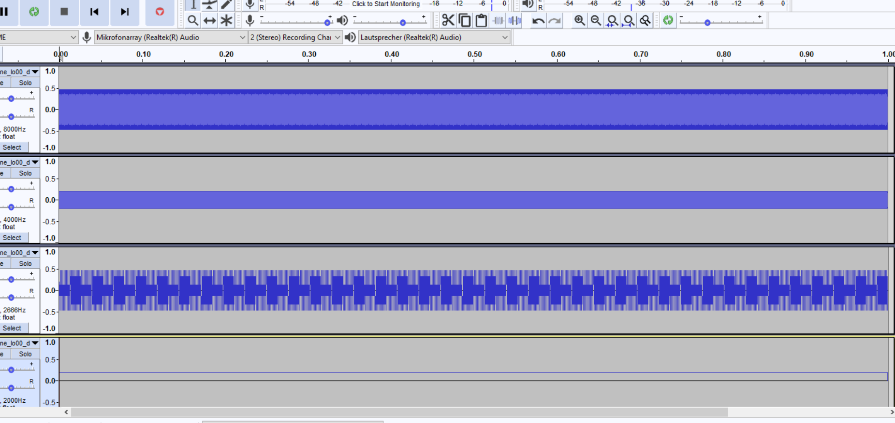
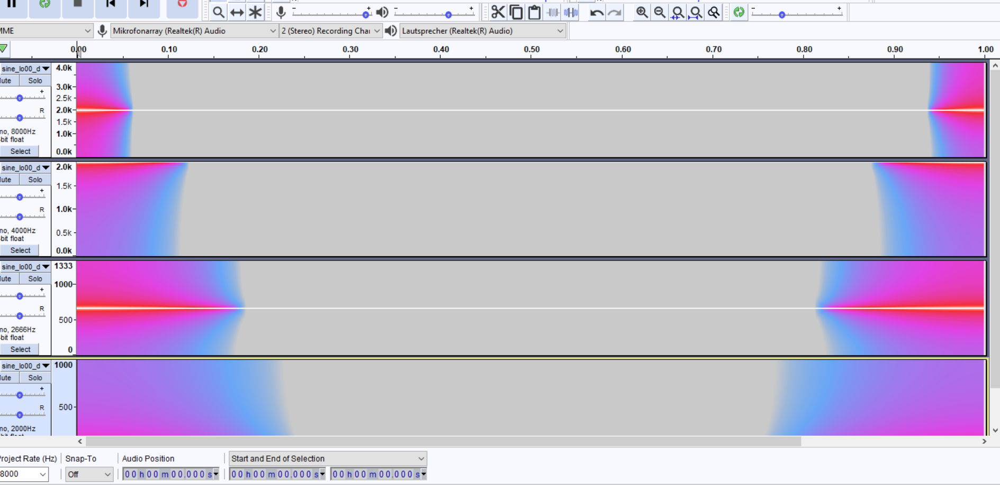
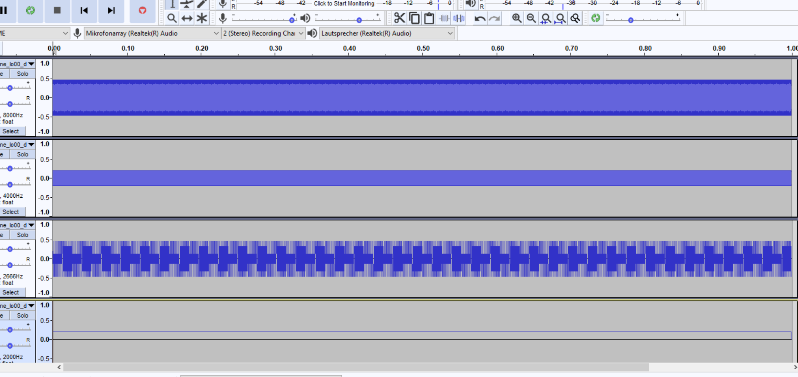
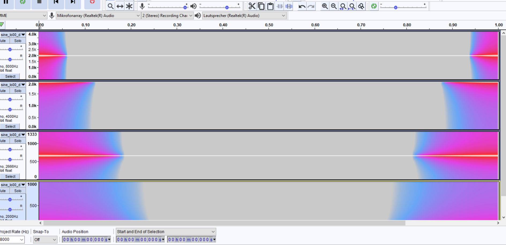
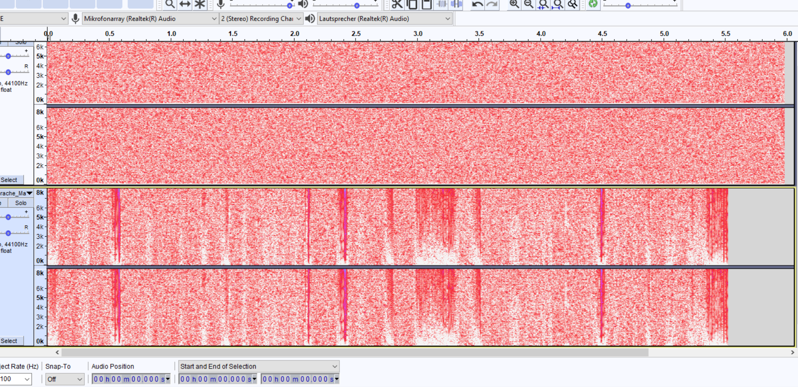

Musikaufnahme
Sprachaufnahme
Laut dem Nyquist-Shannon-Theorem:
Die Samplerate fₓ sollte mindestens doppelt so hoch sein wie die kritische Frequenz fᵨ, d.h. höchste
aufzunehmende Frequenz, also fₓ > 2 × fᵨ.
Anzunehmen ist, dass dadurch wie das Menschliche gehör funktioniert sprache im Bereich
250Hz - 2KHz sind die Lower Mids (Lower Harmonics)
2kHz-4KHz (High Mids)
wahrzunehmen ist.
Wohingegen Musik durch seine Tiefen und Höhen ein viel größeres Spektrum an Schwingungen enthält.
Dabei schließt sich nicht aus das Menschen ebenfalls Geräusche außerhalb des Sprachspektrums erzeugen
können aber im generellen bewegt sich Sprache im normalgebrauch auf einem kleineren Spektrum und erfordert
deshalb eine geringere samplingrate um rekonstruierbare Signale zu digitalisieren.
Daher benötigen wir beim abtasten eines sprachsignales mindestens eine Abtastrate von 8Khz (4Khz ist die
obere Grenze dessen was wir als eingabesignal im sprachraum erwarten; somit niedrigster Aufwand)
Zudem:
Die Audio Files haben verschiedene Abtastfrequenzen, da ein stereo Signal beim Abtasten alternierend
Werte aus Channel1/Channel2 erhält und somit doppelt soviele abtastungen (observationen) benötigt um
ein Audio-File der selben länge und der selben Bit(-igkeit;6Bit, 16Bit, 32Bit) zu diskretisieren.
Als referenz für die header beschreibung nutze ich die geschnittenen 5s clips im .wav format, da meine initiale Musik-Datei nur im .mp3 Format existiert und wave_io nicht damit umgehen kann.
44,100 samples per second × 16 bits per sample × 2 channels = 1411kbps
int fa_max = 0
Writer fileWriter = new FileWriter(path+"\\out.txt");
for (int i=0; i < samples;i++) {
short val = readWavFile.sound[i];
fileWriter.write(val+System.lineSeparator());
if (abs(val)>fa_max){
fa_max = abs(val);
}
}
Originale: sine_hi03.wav, sine_lo00.wav
int fa_max = 0;
Das höchste gemessene Frequenz der sine_hi03.wav file ist 15137, was bedeutet wir sollten mit signalen zwischen [-15137, 15137] rechnen und unsere Abtastrate muss mehr als doppelt so groß sein.
new_samples = new short[samples];
String path = "C:\\Users\\Kathr\\Documents\\Beuth\\SS20\\MedienTechnologien\\webseite\\ue1";
Writer fileWriter = new FileWriter(path+"\\out.txt");
for (int i=0; i < samples;i++) {
short val = readWavFile.sound[i];
fileWriter.write(val+System.lineSeparator());
if (abs(val)>fa_max){
fa_max = abs(val);
}
}
fileWriter.close();
  Die GrundFrequenz der Schwingung scheint bei 6KHz zu liegen. Was bedeutet dass wir eine Abtastrate von mindestens 2*6KHz+1 benötigen.
Aufgabe: Bei der zeitlichen Diskretisierung eines Analogsignals muss das sogenannte Abtasttheorem
eingehalten werden. Wie lautet es und wie lässt sich der Grenzfall, für den es gerade noch gilt,
illustrieren? Erstelle hierzu eine Zeichnung und erläutere.
Lsg.:
Laut dem Nyquist-Shannon-Theorem:
Die Samplerate fₓ sollte mindestens doppelt so hoch sein wie die kritische Frequenz fᵨ, d.h. höchste
aufzunehmende Frequenz, also fₓ > 2 × fᵨ.
Skizze:

Es wird ein low-pass filter auf das analoge signal angewendet und dann nach dem abtasttheorem
fa > 2*fa_max eine ausreichende menge von observationen an dem signal vorgenommen um später in der
lage zu sein das Signal zu rekonstruieren.
int down_sample = 2;
down_samples = new short[(int)(samples/down_sample)];
// 2e Downsampling
for (int i=0; i < samples;i+=down_sample) {
//DownSampling indem wir jeden zweiten wert verwerfen und ein neues signal mit der hälte der gesampleten daten zu erhalten
short val = readWavFile.sound[i];
down_samples[i/down_sample] = val;
}
[...]
WavFile.write_wav(outFilename, numChannels, numFrames/down_sample, validBits, sampleRate/down_sample, down_samples);
 



Lösung
Darstellbare Amplitudenwerte für 8-Bit Audio-Auflösung = #256 in der Reichweite von -128 bis 127
Darstellbare Amplitudenwerte für 16-Bit Audio-Auflösung = #65536 in der reichweite -32768 bis 32767
Aufgabe: Modifiziere wave_io dahingehend, dass die Bitanzahl reduziert wird. Dazu werden alle Samples durch eine Potenz von 2 geteilt (Integer-Division ohne Rest). Damit das resultierende Signal nicht leiser wird als das Original, wird die Operation durch Multiplikation mit derselben 2er Potenz kompensiert. Zu beachten: Der Datentyp hat nach wie vor 16 bit!
Lsg:
// 3b Bitreduzierung
short[] bit_reduced_samples;
[...]
int valid_range = (int)Math.pow(2.0, validBits);
int upper_bound = valid_range - (int)valid_range/2;
int lower_bound = -upper_bound;
System.out.println("lower/upper bound: "+ lower_bound+" "+upper_bound);
int reduced_bits = 8;
int max_freq = (int)Math.pow(2, validBits-reduced_bits)/2;
System.out.println("Max Freq: "+ max_freq);
bit_reduced_samples = new short[samples];
for (int i=0; i < samples;i++) {
short val = readWavFile.sound[i];
val /= Math.pow(2,reduced_bits);
val *= reduced_bits;
/*while (Math.abs(val) > max_freq){
val /= 2;
}*/
bit_reduced_samples[i] = val;
[...]
WavFile.write_wav(outFilename, numChannels, numFrames, validBits, sampleRate, bit_reduced_samples);
}
Bei der Musikdatei die schwingungen im spektrum von 16 bit enthält macht sich der qualitätverlust recht schnell bemerkbar aber besonders auffällig besonders mit den resultierenden störsignalen wird es bei einer reduzierung von 16Bit auf 8Bit. Die Reichweite des Menschlichen hörens ist bis 20KHz und Sprache nur im bereich von 4KHz, daher macht sich eine Bitreduzierung an einem Signal mit einem größeren Spektrum schneller bemerkbar. Bei Audio Dateien mit Sprache ist die Reichweite generell geringer somit sollte die akzeptable bitereduzierung ebenfalls viel kleiner sein. 250Hz - 2KHz sind die Lower Mids (Lower Harmonics) 2kHz-4KHz sind die High Mids. In diesem Bereich wird Sprache hörbar. Somit kann aus diesem Spektrum ein gewisses Minimum für Sprach-Audio Dateien abgeschätzt werden.
Die Energie beider Bitreduzierten Dateien ist drastisch reduziert, was logisch ist wenn man bedenkt das ein größeres Spektrum mehr Energie bedeutet und wir mit unserer reduzierung alle höherfrequenzigen schwingungen resamplen auf eine Bandbreite (des Audiosignales) was weniger verschiedene frequenzen beschreiben kann.
bit_reduced_difference = new short[samples];
reduced_bits = 3;
for (int i=0; i < samples;i++) {
short val = readWavFile.sound[i];
short new_val = (short)(val / Math.pow(2,reduced_bits));
short diff = (short)((val-new_val)* Math.pow(2,validBits-reduced_bits-1));
bit_reduced_difference[i] = diff;
}
WavFile.write_wav(outFilename, numChannels, numFrames, validBits, sampleRate, bit_reduced_difference);
Musik 1 Bit Quantisierungsfehler (VORSICHT LAUT)
Sprache 1 Bit Quantisierungsfehler (VORSICHT LAUT)
VORSICHT VORSICHT VORSICHT 8 Bit reduzierte Musikdatei, QuantisierungsFehler (differenz zum original)
VORSICHT VORSICHT VORSICHT 9 Bit reduzierte Sprachdatei, QuantisierungsFehler (differenz zum original)
Mein audiorauschen ist extrem Laut auch bei niedriger Bitreduzierung und führt bei Höheren reduktionen zu merkwürdigen artefakten an hochfrequenzigen bändern.